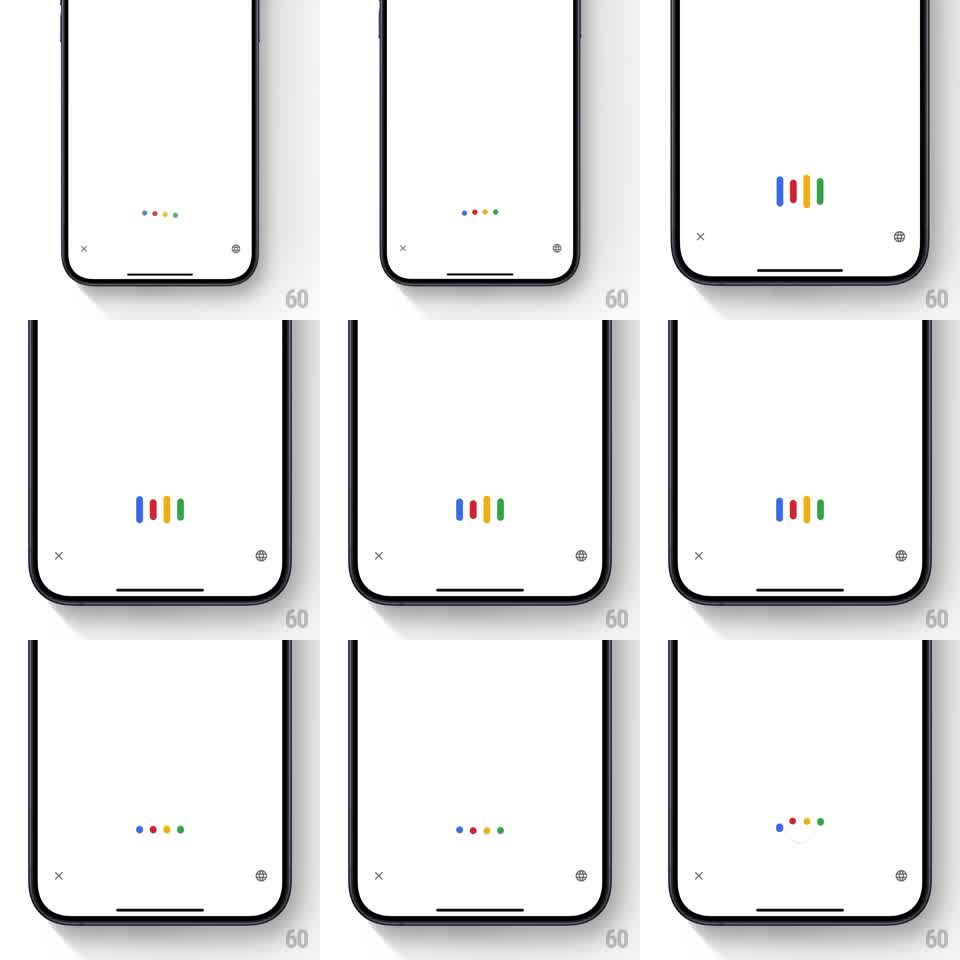

Media
Frame-by-frame

Rebuild this animation 1:1: Google Chrome's voice search - four Google-colored dots hover at screen center, stretch into vertical listening bars that dance with input, then settle back into dots and resolve into the microphone state.

Rebuild this animation 1:1: Google Chrome's voice search - four Google-colored dots hover at screen center, stretch into vertical listening bars that dance with input, then settle back into dots and resolve into the microphone state. ## Integration Integration: stack-agnostic spec - springs given as stiffness/damping, timed motions as duration + curve; map every value to your framework and animation library of choice. ## Scene Clean white voice search sheet: X close button bottom-left, globe bottom-right, and the Google mark element centered - four dots in blue, red, yellow, green on a horizontal line. ## Motion spec Pattern: state-morphing audio indicator (idle -> listening -> processing). - Idle: four dots (~10px) bob gently in place, subtle vertical offset wave (~1s loop). - Listening: each dot stretches into a rounded vertical bar (width stays ~10px, heights oscillate independently 20-60px, staggered phases, ~500ms cycles) - amplitude follows voice input level. - Resolving: bars collapse back to dots (200ms, ease-in-out), dots hold a beat, then a small arc/mic element fades in beneath as the state resolves. - Colors never change; only geometry morphs. ## Calibration - Bar heights must move independently - synchronized bars read as an equalizer graphic, not Google's mark. - Keep morphs gooey-smooth (ease-in-out), no linear steps. ## Reduced motion Dots pulse opacity in listening state instead of stretching. ## Don't miss - Exactly four elements, Google color order: blue, red, yellow, green. - The dot-to-bar morph is continuous - rounded rect corner radius animates with the stretch.